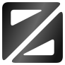

seelo / Form studies
조형 4안 + 선택 패턴 라운드 4안
흑백
반전
그라데이션
Figma ↗
라운드 추가 ↓
고른 안만 보기
01
SVG ↗
02
SVG ↗


03
SVG ↗
삼각형 3개 편집 ↗
04
SVG ↗
선택 패턴 · 라운드 추가
D01 / 첫 번째 · 약한 라운드
SVG ↗
D02 / 첫 번째 · 더 둥근 라운드
SVG ↗
D03 / 두 번째 · 약한 라운드
SVG ↗
D04 / 두 번째 · 더 둥근 라운드
SVG ↗
번호 옆 체크박스로 비교할 안을 고를 수 있습니다.
구성·면적 기록